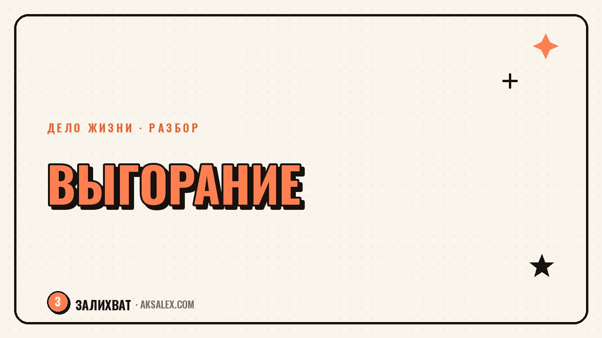

Выгорание на нелюбимой работе: признаки и шаги

Выгорание на нелюбимой работе редко приходит внезапно - оно копится месяцами, а замечают его обычно тогда, когда даже простые задачи начинают требовать неадекватно много сил. Разберём, как отличить обычную усталость от выгорания и какие шаги стоит сделать в первую очередь, не увольняясь под влиянием эмоций в тот же день.
Чем выгорание отличается от обычной усталости
Усталость снимается отдыхом: после выходных или отпуска силы возвращаются, и работа снова выглядит посильной. Выгорание устроено иначе - отдых помогает лишь ненадолго, а на второй-третий рабочий день состояние возвращается к тому же самому, будто отпуска и не было. Это ключевой признак, который стоит отслеживать в первую очередь.
Второе отличие - в отношении к самой работе. При усталости человек по-прежнему заинтересован в результате, ему лишь физически не хватает сил. При выгорании интерес к содержанию работы пропадает, задачи начинают восприниматься как бессмысленные, а любые новые проекты вызывают не любопытство, а раздражение.
Три группы признаков выгорания
- Эмоциональные: раздражительность, цинизм, безразличие к результату
- Телесные: постоянная усталость, проблемы со сном, частые головные боли
- Поведенческие: прокрастинация, откладывание простых задач, снижение качества работы
Почему на нелюбимой работе выгорание наступает быстрее
Выгореть можно и на любимом деле, но на нелюбимой работе процесс идёт быстрее по одной причине: нет внутреннего ресурса, который компенсировал бы усталость. Когда работа интересна, сложности воспринимаются как вызов, а на нелюбимой работе та же нагрузка ощущается чисто как трата сил без отдачи.
Добавляется и фактор смысла: мозг легче переносит трудности, если понимает, ради чего они. На нелюбимой работе ответ на вопрос «зачем я это делаю» часто сводится только к зарплате - и этого объяснения хватает не на любой объём нагрузки, особенно когда она растёт, а условия не меняются.
Частое наблюдение психологов: выгорание - это не про слабость характера, а про длительное несоответствие между тем, сколько сил тратится, и тем, сколько смысла и отдачи человек получает взамен.
Первые шаги, если признаки уже есть
Главная ошибка на этом этапе - резко уволиться под влиянием тяжёлого дня, не разобравшись, что именно измотало. Решение, принятое в остром состоянии, часто оказывается импульсивным, а новая работа без разбора причин рискует привести к тому же результату через несколько месяцев.
Первым шагом полезно честно разделить источники нагрузки: что связано с содержанием самой работы, а что - с конкретными условиями, которые в принципе можно изменить, не меняя место. Иногда выгорание вызвано не профессией как таковой, а переработками, токсичным руководителем или отсутствием обратной связи - и это решается разговором или сменой отдела, а не увольнением.
Что стоит сделать, прежде чем принимать решение об уходе
- Взять хотя бы несколько дней отпуска и понаблюдать, возвращаются ли силы
- Выписать отдельно, что связано с содержанием работы, а что - с условиями
- Обсудить нагрузку и границы с руководителем, если это в принципе возможно
- Восстановить базовые вещи: сон, паузы в течение дня, время без работы вечером
Как понять, что дело именно в профессии, а не в условиях
Если после отпуска и изменения условий состояние не меняется, а сама суть задач продолжает вызывать безразличие или раздражение, это сигнал, что дело не в переработках, а в содержании работы. Стоит честно спросить себя: было бы иначе, если бы эти же задачи оплачивались лучше или начальник был мягче - если ответ «нет», проблема глубже условий.
В этом случае разумно начать присматриваться к смежным направлениям внутри своей же индустрии или к смене профессии - но постепенно, через маленькие пробы, а не через резкий уход в никуда. Сравнение ниже показывает, чем отличается ситуация «дело в условиях» от ситуации «дело в профессии».
Сравнение: усталость от условий или выгорание от профессии
| Признак | Дело в условиях | Дело в самой профессии |
|---|---|---|
| После отпуска | Силы заметно возвращаются | Состояние почти не меняется |
| Смена задач внутри той же работы | Становится легче | Раздражение сохраняется |
| Отношение к содержанию работы | Интерес остаётся, мешает нагрузка | Само содержание не увлекает |
| Что помогает | Разговор с руководителем, смена графика | Смена направления или профессии |
Эта таблица - не диагноз, а ориентир для самонаблюдения на пару недель. Однозначный вывод стоит делать не по одному дню, а по повторяющейся картине.
Когда стоит обратиться за поддержкой, а не разбираться в одиночку
Если признаки выгорания сохраняются месяцами, а восстановить силы своими средствами не получается, это повод обратиться к психологу, а не продолжать терпеть или искать очередной лайфхак для мотивации. Самостоятельный разбор хорошо помогает понять направление движения, но не заменяет поддержку, когда состояние уже сильно влияет на здоровье и отношения.
Частые вопросы
Как отличить обычную усталость от выгорания на работе?
Усталость снимается отдыхом и возвращается интерес к работе после отпуска. При выгорании состояние почти не меняется после отдыха, а содержание работы начинает вызывать безразличие или раздражение вместо интереса.
Стоит ли сразу увольняться при первых признаках выгорания?
Лучше не принимать решение в остром состоянии, а сначала разобраться, что именно вызывает истощение - содержание работы или конкретные условия вроде переработок. Импульсивное увольнение без этого разбора часто приводит к похожей ситуации на новом месте.
Может ли выгорание быть вызвано не профессией, а условиями работы?
Да, и это встречается часто: токсичное руководство, переработки или отсутствие обратной связи выгорают человека быстрее, чем сама суть задач. В таком случае помогает смена условий, а не полная смена профессии.
Сколько времени нужно, чтобы понять причину выгорания?
Обычно нужно несколько недель наблюдения за собой, включая период отдыха, чтобы увидеть повторяющуюся картину. Выводы по одному тяжёлому дню редко бывают точными.
Когда нужно обращаться к специалисту при выгорании на работе?
Если признаки сохраняются месяцами и восстановить силы самостоятельно не получается, стоит обратиться к психологу. Самостоятельный разбор помогает понять направление, но не заменяет поддержку при затяжном тяжёлом состоянии.
Раз тема оказалась полезной, вот что почитать следующим. Не «найди своё предназначение», а конкретные шаги: что делать, если непонятно, чем заниматься.
Читать статью →а не вручную